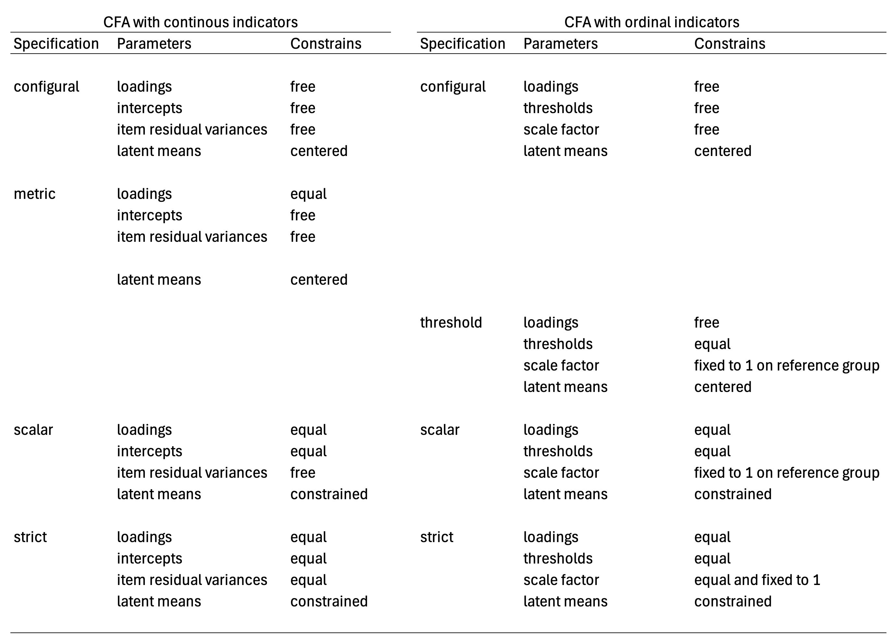

2 Response model
The present guideline is focused on measurement invariance models for confirmatory factor analysis for ordinal indicators. In particular, we are focusing on the graded response model with probit link (Bovaird & Koziol, 2012).
2.1 Graded Response Model
The graded response model (Samejima, 1968; 2016) is an item response theory model, fitted onto ordinal responses. Historically, it appears before the partial credit model (Masters, 1982), which is the most popular response model to generate scores across several large-scale assessment studies (Carrasco, Torres Irribarra & González, 2022). This model can be fitted using link functions, the logit function and the probit function (Bovaird & Koziol, 2012). This model is also referred to as a confirmatory factor analysis for ordinal indicators (e.g., Bovaird & Koziol, 2012, Wang & Wang, 2020).
We will review the formal presentation of these two variants, so is easier to make a bridge between polytomous item response theory models, and confirmatory factor models for ordinal indicators. The first variant, with the logit link can be formally expressed with the following equation:
\[ Pr(y_{ip} \geq k) = \frac{exp[a_{i}(\theta_{p}-b_{ik})]}{exp[1 + a_{i}(\theta_{p}-b_{ik})]} \tag{2.1}\]
A more concise version of the previous equation is the following formula, using the logit link function:
\[ logit[Pr(y_{ip} \geq k)] = a_{i}(\theta_{p}-b_{ik}) \tag{2.2}\]
The GRM model with a logit link expressed the probability of responses \(y\) to item \(i\) from person \(p\). The higher the values \(θ_{p}\), the higher the propensity to provide answers of higher categories. The parameter \(a_{i}\) is often interpreted as a discrimination parameter, because the higher is its value, the higher is the separation between low and high trait persons in their expected response probability. The parameter \(b_{ik}\) can be interpreted as a location parameter to items responses and can help to distinguish the expected proportions of each response categories. Here we interpret \(θ_{p}\) as propensities without a particular meaning because polytomous scales in ILSA can include instruments aimed to measure other attributes beside abilities, including attitudes, beliefs, endorsement to norms, among other attributes. The meaning of the values θ_p are conditioned by the content of instrument eliciting the responses being model in the measurement model.
Graded response models (GRM) with logit link can be specified in similar way to the partial credit model (PCM). The \(a_{i}\) parameter can be constrained to one, and then only the person locations ( \(θ_{p}\) ) and item locations ( \(b_{ik}\) ) are relevant in the measurement model. The main difference between these two models is the implied response probability category functions. While the PCM includes the adjacent logit function; the GRM relies on the cumulative logit function (Mellenbergh, 1994). Thus, for items with three ordered response categories, the item locations are the natural logarithms of the odds of answering 1 vs 2, and 2 vs 3 for the adjacent logit link; while for the cumulative link function consists of natural logarithms contrasting the odds of answering 1 vs 2, 3; and 1, 2 vs 3 (Carrasco et al., 2022). And additional property of the GRM \(b_{ik}\) parameters, is these parameters are ordered parameters. Formally this property can be expressed by \(b_{ik} \geq b_{ik-1}\). Such property is not shared with the PCM and its adjacent logits, where b_ik are not necessarily ordered (Adams et al., 2012). In summary GRM is an item response theory model applicable to polytomous ordered responses, using a cumulative response probability function.
An alternative formulation for the present model and the focus of the present guideline is the GRM with the probit link. Following Bovaird & Koziol (2012), we express this model with the next equation:
\[ Pr(y_{ip} \geq k) = \phi(-\tau_{ik} + \lambda_{i}\theta_{p}) \tag{2.3}\]
We can express the previous formula in a more concise manner by using the probit link in the equation:
\[ probit[Pr(y_{ip} \geq k)] = \tau_{ik} - \lambda_{i}\theta_{p} \tag{2.4}\]
We rely on this second formulation, to fit the different model specification to assess measurement invariance. In this formulation factor loadings ( \(\lambda_{i}\) ) and thresholds are included ( \(-\tau_{ik}\) ) per item, and a term for the theoretical factor ( \(θ_{p}\) ). These terms can be used to retrieve \(a_{i}\) and \(b_{ik}\) from the IRT parameterization, using the following expressions (Wang & Wang, 2020, p87):
\[ a_{i} = \lambda_{i} \tag{2.5}\]
\[ b_{ik} = \frac{\tau_{ik}}{\lambda_{i}} \tag{2.6}\]
Although the previous expressions do not include variance terms for each item or residual terms (i.e., uniqueness), these terms can be made part of the model in multigroup specifications (Asparouhov & Muthén, 2020). We can make this explicit if we review the GRM parameterizations and its latent scale formulation. The GRM model has two parameterizations, the theta parameterization and the delta parameterization. These two parameterizations reach identical model fit, and the estimated parameters can be considered rotations of one another (Grimm et al., 2016). The difference between two parameterizations are the fixed parameters included for model identification purposes. We used to the latent scale formulation of the GRM to describe this different model constraints. In a single factor model, the latent scale formulation can be expressed as follows:
\[ y_{ip}^* = \lambda_{i}\theta_{p}+e_{pi} \tag{2.7}\]
In the theta formulation the variance of each e_pi is fixed to 1; while in the delta formulation this variance term is fixed to \(1-\sigma_{explained}^2\). Hence, the delta parameterization is a standardized solution (Grimm et al., 2016). The relationship between the two-model parameterization is a scale factor. For a single factor model where the latent factor variance is fixed 1, the estimates of factor loadings and thresholds in the theta parameterization are greater by a scale factor. This scale factor is \(\frac{1}{\sqrt{1-\sigma_{explained}^2}}\) .
The delta parameterization estimated solutions has been found to be more stable (Muthén & Asparouhov, 2002). The present version of the rd3c3 library implements different model specifications of the GRM using the delta parameterization.
2.2 Invariance model specifications with the GRM model
A measurement model can be considered invariant if all measurement model parameters can be held equal across groups, besides the group latent means. This general idea applies to measurement models fitted onto polytomous responses including confirmatory factor analysis with continuous indicators, graded response models (e.g., Wu & Estabrook, 2016; Tse et al., 2024) and to latent class models (e.g., Masyn, 2017; Torres Irribarra & Carrasco, 2021); that is latent variable models with latent factors that are discrete instead of normally distributed (Torres Irribarra, 2021). This is the most demanding form of measurement equivalence between groups, usually described as strict invariance across different measurement models.
A more relaxed version of invariance model specification is scalar invariance. In this model specification all measurement model parameters are held equal across groups, beside latent means, with varying item residuals. Although GRM does not include item residuals or item variance terms in its formulation, scale factors from the delta parameterization and item residuals in the theta parameterization can be made part of the model for multigroup specifications (Asparouhov & Muthén, 2020) and in longitudinal model specifications (Grimm et al., 2016). In the scalar invariance model specification with delta parameterization in the GRM scale factors are fix to one in the reference group and let free to vary in the rest of the contrasting groups (Grimm et al., 2016; Svetina et al., 2020; Tse et al., 2024).
In the case of GRM, model specifications where more parameters allow to vary freely between groups are not able to provide latent mean comparisons (Wu & Estabrook, 2016). These includes models with common factor loadings, but free thresholds, models with common thresholds but free factor loadings, and purely descriptive models where all measurement model parameters are allowed to vary freely.
Grouping variables can include sociodemographic variables such as age, students sex, and parents education. Yet, in large scale assessment, a popular grouping variable of interest is countries. Thus, if measurement model parameters can be considered invariant across countries besides their group means, one can assure that countries can be compared in a common scale.
A common practice in measurement invariance literature with CFA for continuous indicators is to start with the model with less constrains (e.g., Dimitrov, 2010) and continue further till the most constrained model (i.e., strict invariance). In essence, this is a model building sequence (Kline, 2023). In this sequence, different model specifications are included. The first, is the configural model specification where only the model structure is common, yet all measurement model parameters vary freely between groups. Then is followed by the metric model specification where only factor loadings are held equal. Yet, in this model specification there are no parameters in the multi-group model to compare latent means between groups (e.g. Wu & Estabrook, 2016). In this model, latent factors have centered latent means, latent means fixed to zero. In a third stage, the scalar model specification is included. In the scalar model, factor loadings, indicators intercepts, are held common among groups, while latent means are constrained (i.e., one group has a latent of mean zero and is used as a point of reference). This model allows for latent mean comparison among groups. Finally, the most constrained model specification is included, the strict model. In this model specification all measurement model parameters are held equal among groups, with the exemption of latent means. In the model building sequence, the new parameter that is held common among groups are uniqueness or error variances (Brown, 2006). This last model specification also allows to compare groups on latent means, while assuming residual error of the measurement model is common among groups.
Model specification sequence for assessing invariance on CFA with ordinal indicators, is different from CFA with continuous indicators. Wu & Estabrook (2016) asserts that invariance within the CFA for ordinal indicators common thresholds are needed before common factor loadings can be introduced in the model building sequence (Wu & Estabrook, 2016; Svetina, et al. 2020; Tse, et al., 2024). In practice, common factor loadings between group cannot be tested alone (Wu & Estabrook, 2016, p1023). Complementary, Tse et al. (2024) recommends assessing if strict invariance holds among groups, before relying on total scores (e.g., observed means) for group comparisons. Then, if strict invariance fails, then one should proceed to search for partially invariant solutions such as, partially strict invariance, and scalar invariance if latent means can be used instead of observed mean scores. Following Tse et al. (2024) one can alter the model sequence for a model trimming sequence instead (Kline, 2023). That is, instead of starting with the model with the most freely estimated parameters, one can start with the model with the most held equal parameters among groups (the most constrained). As such, the model sequence for GRM would be strict, scalar, configural (with common thresholds), and a base model (with freely estimated measurement model parameters).
In the following figure, we summarize the parameters of the measurement model that can be held equal between groups in each of the model specification for CFA with continuous and for CFA with ordinal indicators (i.e., GRM with delta parameterization).
The present table is a summary of the different measurement model parameters that are held equal among groups to specify each model specification. For both measurement models, the configural model specification is a purely descriptive model, where all parameters are free to vary in both models, with the exemption of latent means and latent factor variances which are fixed to zero and one respectively. In contrast, the metric model specification described for CFA with continuous indicators doesn’t have the same interpretation for CFA with ordinal indicators. According to Wu & Estabrook (2016) thresholds needs to be held common across groups to assure models are nested in the modelling sequence: configural, threshold, scalar, strict. There is alternative model specifications discuss by Wu & Estabrook (2016), and by Tse et al. (2024) for the configural solution, in which factor loadings are held common between groups, and thresholds are held common for marker indicators instead of all items. In the present table, we are following Svetina et al. (2020) model specification for configural and threshold invariance models. The threshold invariant model is a baseline model from which model comparisons can be made in contrast to scalar and strict solutions of the GRM model. In the present guideline we will review these model specifications in more detail in section 4, following Svetina et al. (2020) using the delta parameterization, while using a model trimming sequence starting from the strict model specification with common thresholds. Model specification where only thresholds are held common for marker indicators are not covered. Interested readers on this option can consult Tse et al. (2024) for this alternative model specification.
It should be clear that not all model specifications propose for CFA with continuous indicators are equivalent for other measurement models. The weak invariance (e.g., Dimitrov, 2010) or metric invariance model specification (Wu & Estabrook, 2016) from CFA with continuous indicators, where common factor loadings are held equal across groups, do not reach a model specification that holds the same interpretation for CFA with ordinal indicators (Wu & Estabrook, 2016; Svetina, et al. 2020; Tse, et al., 2024) if thresholds are allow to vary freely. A similar observation can be done for the assumed interpretation of the metric model specification with latent class models (e.g., Hooghe & Oser, 2015; Hooghe et al., 2016). The metric model specification applied to latent class models is a special case of a non-invariant solution (Masyn, 2017) and doesn’t hold the same interpretation of the random term across groups, the configuration of the latent classes (Torres Irribarra, et al., 2021). In summary, model specifications to assess measurement invariance may not hold in the same way for all measurement models. The metric invariance model specification is an example on this regard.
If invariance holds, the purpose is to assert that group differences are on the random term of the measurement model with a common interpretation. For the case of continuous latent factors, the aim is to assert groups are different in terms of their location in the latent continuum, but not on their expected responses to items at equal levels of the latent factor. For the case of discrete latent factors, the aim is to asserts that groups can vary in size regarding the latent classes, but not on the response probabilities for each compared group if persons belong to the same latent class. If the model specification doesn’t provide group differences with a common interpretation, then substantive conclusions regarding group differences are not tenable as one expects because these do not have a common meaning across groups. In the following section (section 2) we will describe what are partially invariant solutions.
2.3 References
Adams, R. J., Wu, M. L., & Wilson, M. (2012). The Rasch Rating Model and the Disordered Threshold Controversy. Educational and Psychological Measurement, 72(4), 547–573. https://doi.org/10.1177/0013164411432166
Agresti, A. (2010). Analysis of Ordinal Categorical Data. John Wiley & Sons, Inc.
Asparouhov, T., & Muthén, B. (2020). IRT in Mplus. In Mplus Technical Appendix. https://www.statmodel.com/download/MplusIRT.pdf
Borsboom, D. (2005). Measuring the Mind. Cambridge University Press.
Bovaird, J. A., & Koziol, N. A. (2012). Measurement Models for Ordered-Categorical Indicators. In R. H. Hoyle (Ed.), Handbook of Structural Equation Modeling (pp. 495–511). Guilford Press.
Brown, T. A. (2006). Confirmatory factor analysis for applied research. Guilford Press.
Carrasco, D., Irribarra, D. T., & González, J. (2022). Continuation Ratio Model for Polytomous Items Under Complex Sampling Design. In Quantitative Psychology (pp. 95–110). https://doi.org/10.1007/978-3-031-04572-1_8
De Boeck, P., & Wilson, M. (2004). Explanatory Item Response Models (P. De Boeck & M. Wilson (eds.)). Springer New York. https://doi.org/10.1007/978-1-4757-3990-9
Dimitrov, D. M. (2010). Testing for Factorial Invariance in the Context of Construct Validation. Measurement and Evaluation in Counseling and Development, 43, 121–149. https://doi.org/10.1177/0748175610373459
Engelhard, G. J., & Wind, S. A. (2018). Invariant Measurement with raters and rating scales. Routledge.
Farkas, G. (2003). Cognitive Skills and Noncognitive Traits and Behaviors in Stratification Processes. Annual Review of Sociology, 29, 541–562. https://doi.org/10.1146/annurev.soc.29.010202.100023
Grimm, K. J., & Liu, Y. (2016). Residual Structures in Growth Models With Ordinal Outcomes. Structural Equation Modeling, 23(3), 466–475. https://doi.org/10.1080/10705511.2015.1103192
Hooghe, M., & Oser, J. (2015). The rise of engaged citizenship: The evolution of citizenship norms among adolescents in 21 countries between 1999 and 2009. International Journal of Comparative Sociology, 56(1), 29–52. https://doi.org/10.1177/0020715215578488.
Hooghe, M., Oser, J., & Marien, S. (2016). A comparative analysis of ‘good citizenship’: A latent class analysis of adolescents’ citizenship norms in 38 countries. International Political Science Review, 37(1), 115–129. https://doi.org/10.1177/0192512114541562.
Kline, R. B. (2023). Principles and Practice of Structural Equation Modeling (5th ed.). Guilford Press.
Masters, G. N. (1982). A rasch model for partial credit scoring. Psychometrika, 47(2), 149–174. https://doi.org/10.1007/BF02296272
Masyn, K. E. (2017). Measurement Invariance and Differential Item Functioning in Latent Class Analysis With Stepwise Multiple Indicator Multiple Cause Modeling. Structural Equation Modeling: A Multidisciplinary Journal, 24(2), 180–197. https://doi.org/10.1080/10705511.2016.1254049
Mellenbergh, G. J. (1994). Generalized linear item response theory. Psychological Bulletin, 115(2), 300–307. https://doi.org/10.1037//0033-2909.115.2.300
Muthén, B., & Asparouhov, T. (2002). Latent variable analysis with categorical outcomes: Multiple-group and growth modeling in Mplus. Retrieved from http://www.statmodel.com/download/webnotes/ CatMGLong.pdf
Samejima, F. (1968). Estimation of latent Ability using a response pattern of graded scores. ETS Research Bulletin Series, 1968(1), i–169. https://doi.org/10.1002/j.2333-8504.1968.tb00153.x
Samejima, F. (2016). Graded Response Models. In W. J. van der Linden (Ed.), Handbook of Item Response Theory. Volume One. Models (pp. 95–107). CRC Press. https://doi.org/10.1201/9781315374512-16
Schulz, W., Carstens, R., Losito, B., & Fraillon, J. (2018). ICCS 2016 Technical Report (W. Schulz, R. Carstens, B. Losito, & J. Fraillon (eds.)). International Association for the Evaluation of Educational Achievement (IEA).
Skrondal, A., & Rabe-Hesketh, S. (2004). Generalized latent variable modeling: Multilevel, longitudinal, and structural equation models. Chapman & Hall CRC.
Torres Irribarra, D. (2021). A Pragmatic Perspective of Measurement. Springer International Publishing. https://doi.org/10.1007/978-3-030-74025-2
Torres Irribarra, D., & Carrasco, D. (2021). Profiles of Good Citizenship. In E. Treviño, D. Carrasco, E. Claes, & K. J. Kennedy (Eds.), Good Citizenship for the Next Generation. A Global Perspective Using IEA ICCS 2016 Data (pp. 33–50). Springer International Publishing. https://doi.org/10.1007/978-3-030-75746-5_3
Tse, W. W. Y., Lai, M. H. C., & Zhang, Y. (2024). Does strict invariance matter? Valid group mean comparisons with ordered-categorical items. Behavior Research Methods, 56(4), 3117–3139. https://doi.org/10.3758/s13428-023-02247-6
Von Davier, M. (2020). TIMSS 2019 Scaling Methodology: Item Response Theory , Population Models , and Linking Across Modes. In M. O. Martin, M. Von Davier, & I. V. S. Mullis (Eds.), Methods and Procedures: TIMSS 2019 Technical Report (pp. 11.1-11.25). TIMSS & PIRLS International Study Center, Lynch School of Education and Human Development, Boston College and International Association for the Evaluation of Educational Achievement (IEA).
Wang, J., & Wang, X. (2020). Confirmatory Factor Analysis. In Structural Equation Modeling: Applications Using Mplus (pp. 33–117). John Wiley & Sons, Inc. https://doi.org/10.4324/9781315832746-25
Wu, H., & Estabrook, R. (2016). Identification of Confirmatory Factor Analysis Models of Different Levels of Invariance for Ordered Categorical Outcomes. Psychometrika, 81(4), 1014–1045. https://doi.org/10.1007/s11336-016-9506-0